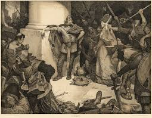

Fin de la Era Vikinga
El Fin de la Era Vikinga
La era vikinga, un período fascinante de exploraciones, conquistas y transformaciones culturales, se extendió aproximadamente desde finales del siglo VIII hasta mediados del siglo XI. Durante este tiempo, los pueblos escandinavos, conocidos como vikingos, dejaron una profunda huella en la historia de Europa mediante incursiones, comercio y asentamientos. Sin embargo, como todo ciclo histórico, su era tuvo un ocaso. El fin de la era vikinga no ocurrió por un único evento, sino como resultado de múltiples factores que se entrelazaron a lo largo del tiempo. Entre estos factores se destacan la cristianización de Escandinavia, el fortalecimiento de los reinos europeos, el cambio en las estructuras políticas internas y la transformación del comercio internacional.
Uno de los factores más decisivos fue la conversión al cristianismo. A medida que los reinos escandinavos fueron adoptando el cristianismo, también se fueron integrando al orden político y religioso del resto de Europa. El cristianismo no solo trajo una nueva fe, sino también nuevos valores, leyes e instituciones que reemplazaron las estructuras tradicionales paganas que habían sustentado las expediciones vikingas. Por ejemplo, el rey Olaf II de Noruega fue un ferviente promotor del cristianismo y luchó contra las antiguas creencias paganas hasta consolidar la nueva fe como base del Estado.
Otro factor crucial fue el fortalecimiento de los reinos europeos, que en siglos anteriores habían sido víctimas recurrentes de los ataques vikingos. Durante el siglo IX, muchos reinos eran débiles, desorganizados o recién formados, lo que facilitaba las incursiones nórdicas. Sin embargo, hacia el siglo X y XI, reinos como Inglaterra, Francia y el Sacro Imperio Romano Germánico fortalecieron sus ejércitos, construyeron sistemas defensivos más eficaces y establecieron monarquías más centralizadas. La creación de murallas, la formación de milicias y la organización de flotas defensivas dificultaron enormemente los ataques sorpresa que caracterizaban a los vikingos.
El desarrollo interno de Escandinavia también jugó un papel importante. Los reinos vikingos comenzaron a centralizarse y a formar monarquías más estructuradas, como ocurrió en Dinamarca, Noruega y Suecia. Esto generó un cambio en las prioridades políticas: en lugar de promover saqueos y expediciones, los líderes buscaron estabilidad, recaudación de impuestos, alianzas diplomáticas y expansión territorial dentro del marco europeo. La violencia desorganizada fue gradualmente sustituida por campañas militares bajo el control del rey, con fines más estratégicos que saqueadores.
Asimismo, el comercio internacional cambió, reduciendo la necesidad de expediciones vikingas como fuente de riqueza. Las rutas comerciales en Europa y Asia se estabilizaron, y nuevas oportunidades económicas surgieron mediante acuerdos pacíficos en lugar de saqueos. Los vikingos, que ya eran comerciantes hábiles, comenzaron a integrarse en estas redes, y muchos antiguos guerreros se convirtieron en mercaderes o campesinos. Las antiguas ciudades vikingas, como Hedeby, Ribe o Birka, evolucionaron hacia centros comerciales cristianizados e integrados al sistema económico europeo.
Uno de los eventos simbólicos que marcan el final de la era vikinga fue la batalla de Stamford Bridge en 1066. En este enfrentamiento, el rey inglés Harold Godwinson derrotó al rey noruego Harald Hardrada, considerado por muchos como el último gran rey vikingo. Esta batalla representa el fin de las grandes invasiones vikingas a Inglaterra, y marca también el cierre de una etapa histórica. Irónicamente, ese mismo año, Harold Godwinson moriría en la batalla de Hastings frente a los normandos, descendientes de antiguos vikingos que se habían asentado en Normandía.
A partir del siglo XI, la identidad vikinga se diluye gradualmente. Ya no se hablaba de vikingos como una amenaza externa. Los antiguos guerreros del norte se convirtieron en súbditos de reinos cristianos escandinavos, integrados en la política continental. La lengua, la religión y las costumbres también evolucionaron. Las sagas y las runas dieron paso a la escritura latina, y las antiguas tradiciones orales fueron reemplazadas por documentos escritos bajo la influencia del cristianismo.
Aunque la era vikinga terminó, su legado persistió de muchas formas. La expansión vikinga dejó una huella en las lenguas, en las costumbres y en la genética de diversas regiones de Europa. El asentamiento en lugares como Normandía, las Islas Británicas, Islandia y partes de Rusia no desapareció con el fin de las incursiones. Por el contrario, las comunidades de origen vikingo continuaron floreciendo, pero bajo nuevas formas políticas y culturales.
El fin de la era vikinga no fue una caída repentina, sino una transformación gradual. El mismo espíritu de exploración, navegación y adaptación que los caracterizó durante siglos se expresó más adelante en otras formas. Algunos historiadores sostienen que el impulso vikingo nunca desapareció del todo, sino que se integró en las nuevas naciones escandinavas que surgirían en los siglos posteriores.
También es importante señalar que, con el final de esta era, el mar dejó de ser una frontera abierta para convertirse en un espacio vigilado. La libertad con la que los vikingos se movían por el Báltico, el Atlántico Norte y los ríos europeos fue restringida por las nuevas potencias marítimas. La aparición de flotas permanentes y puertos fortificados transformó el equilibrio de poder. La piratería dejó de ser vista como una forma legítima de riqueza y pasó a ser perseguida por las autoridades reales.
Además, las nuevas formas de guerra y organización militar pusieron en desventaja a los grupos independientes como los vikingos. Mientras que antes la movilidad y la sorpresa eran clave, ahora los ejércitos se componían de tropas mejor organizadas, protegidas por castillos y respaldadas por burocracias estatales. La aparición de la caballería pesada, por ejemplo, ofrecía una defensa efectiva contra las incursiones rápidas.
En lo cultural, el fin de la era vikinga permitió que las sagas, los poemas escáldicos y las tradiciones orales fueran recogidas y conservadas por los monjes cristianos. Gracias a ello, hoy conocemos muchas de sus historias, mitologías y hazañas. La preservación de estos relatos fue paradójicamente posible gracias al mismo cristianismo que ayudó a poner fin a la era pagana.
En resumen, el final de la era vikinga fue un proceso histórico complejo, caracterizado por la transición de los pueblos escandinavos de tribus guerreras independientes a reinos cristianos centralizados e integrados en Europa. No fue un colapso, sino una metamorfosis. Con ello terminó una de las épocas más apasionantes de la historia medieval, pero comenzó también una nueva etapa de desarrollo, donde los antiguos vikingos se convirtieron en constructores de reinos, comerciantes y navegantes que continuarían desempeñando un papel relevante en la historia europea.
| Categoría | Descripción |
|---|---|
| Periodo aproximado del final | Siglos X–XI (aprox.950–1066 d.C.) |
| Evento simbólico final | Batalla de Stamford Bridge (1066), muerte
del rey vikingo Harald Hardrada a manos del rey inglés Harold Godwinson |
| Causa religiosa | Cristianización de Escandinavia,
reemplazo de religiones nórdicas por el cristianismo |
| Causa política | Consolidación de monarquías
escandinavas (Dinamarca, Noruega y Suecia) y centralización del poder |
| Causa militar | Fortalecimiento de ejércitos europeos,
construcción de castillos y defensas costeras, surgimiento de caballería pesada |
| Causa económica | Estabilización del comercio europeo,
menos necesidad de saqueos, transformación de vikingos en comerciantes |
| Cambio cultural | Abandono del alfabeto rúnico y adopción
del alfabeto latino, integración de costumbres cristianas |
| Fin de las incursiones | Reducción gradual de saqueos debido a
defensas efectivas y pactos políticos |
